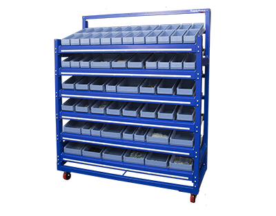

<script type="module" src="https://cdn.jsdelivr.net/npm/@ionic/core@4.7.4/dist/ionic/ionic.esm.js"></script>
<script nomodule src="https://cdn.jsdelivr.net/npm/@ionic/core@4.7.4/dist/ionic/ionic.js"></script>

<ion-header>
  <ion-toolbar>
      <ion-buttons slot="start">
          <ion-menu-button></ion-menu-button>
      </ion-buttons>
    <ion-title>
        Minnow Mobile APP
    </ion-title>
  </ion-toolbar>
 
</ion-header>

<ion-content>
    <ion-card>
      <ion-card-content>BinSense™ is the first Intelligent Kanban product to be added to the SupplyPoint product portfolio. 
        Driven by a simple IoT controller and web based software, the system supports fast moving and low cost inventory through constant notification of inventory levels and automatic reordering resulting in the elimination of many of the manual replenishment steps associated with this type of inventory.
        
        
       If you want more information click <a target="_blank" rel="noopener" href="https://www.supplypoint.com/product/binsense">here</a>.
      </ion-card-content>
    
    </ion-card>
</ion-content>

<ion-footer>
    
</ion-footer>